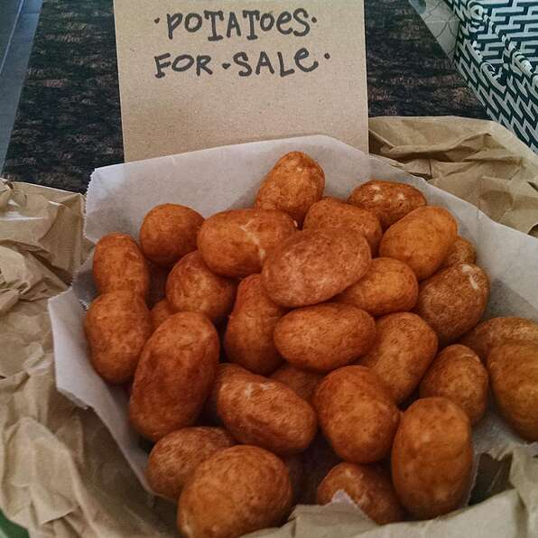

Irish Potato Candy

Description
Offers a twist on the typical "Irish Potato." A small, sweet snack that resembles a potato but is
made using cream cheese and coconut.
Ingredients
- 1/4 cup butter, softened
- 8 ounce package cream cheese
- 1 teaspoon vanilla extract
- 4 cups confectioners' sugar
- 2 1/2 cups flaked coconut
- 1 tablespoon ground cinnamon
Steps
- Beat the butter and cream cheese together until smooth
- Add vanilla and confectioners' sugar
- Beat until smooth
- Mix in coconut
- Roll into balls or potato shapes
- Roll in cinnamon
- Place onto cookie sheet and chill to set
- If desired, roll potatoes in cinnamon again